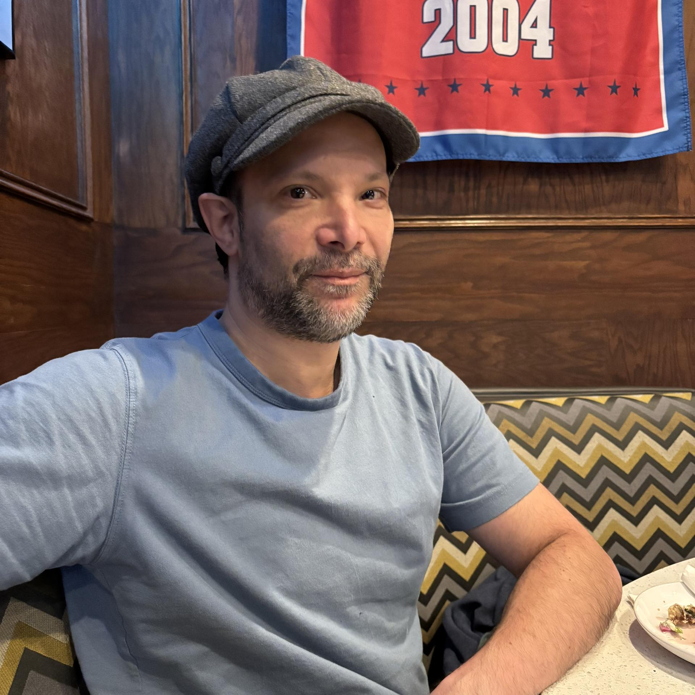

The ABC's of TDS
aka TD Schwartzberg's Digital Resume

Summary:
Web developer with a strong foundation in problem solving, design and critical thinking.
Drawing from a background in technical theater and a passion for languages and philosophy,
I bring creativity and analytical skills to coding.
Currently building projects to expand my expertise in modern web development.
Seeking opportunities to contribute to innovative projects and grow as a developer.
Education:
2005: Marymount Manhattan College, New York, NY
Post-Grad Prerequesite coursework in Speech Language Pathology
2002: Marymount Manhattan College, New York, NY
B.A in Communications Arts, 3.2 GPA
Omicron Delta Kappa and Lamda Pi Eta Honor Society Inductee
Work Experience:
Self-taught Web Development (Ongoing):
2025: Completing full stack web development courses on Udemy
2025: Practiced coding through personal projects and platforms like Mimo
2025: Gaining hands-on experience with modern web technologies (HTML, Javascript, etc)
2012-2023: Explored Linux Mint and Ubuntu through the terminal for basic tasks (e.g., updates, file management)
Rudimentary Web Design: Early 2000s
Designed and built basic websites using HTML
Gained foundational understanding of web development
Skills:
Web Development:
Currently building projects with modern web technologies
Computer Proficiency & Presentation skills:
Experienced with PC, Mac, and Linux-based sotware, including office applications.